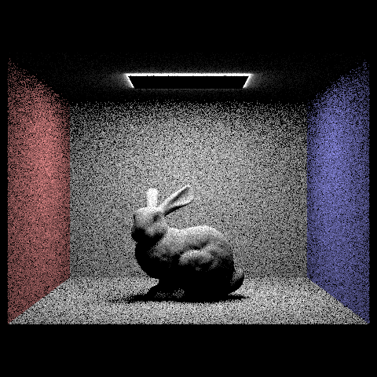
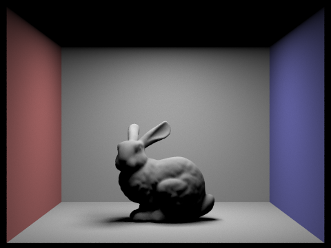
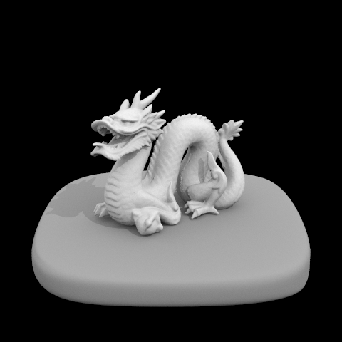

Project 3: Pathtracer
Ashley Nguyen | CS184-agh
Overview
In this project, we implement the core ideas of a physically-based renderer using a pathtracing algorithm. Using core concepts we learned in class, we implement ray-scene intersection, acceleration structures, and physically based lighting and materials.
Part 1: Ray Generation and Scene Intersection
In this part of the project, I implement ray generation and intersection of triangles and spheres. Some important concepts are: the Moller Trumbore algorithm.
I first implement raytrace_pixel() which returns a Spectrum corresponding to the integral of the irradiance over this pixel. I do this by averaging over all the random sample rays taken over the pixel.
In order to generate the rays, we implemented generate_ray() in the Camera file which took a 2D point and generated the corresponding world space ray. Below is an image that depicts the The camera has its own coordinate system and so given the view angles and camera position we needed to the vector to world space. In a more technical explanation, when generating the ray I normalize the point from [0, 1] to [-tan(radians(deg)*.5), tan(radians(deg)*.5)]. Then I find the corresponding position in the sensor plane and convert it to world space using the transform matrix c2w.
corresponding world space ray
In the next part, I implement intersect() for triangles which finds intersections of a ray and a triangle. In this method I use the Moller Trumbore algorithm which is shown below.
Moller Trumbore algorithm for triangles
Möller-Trumbore algorithm is used to quickly computer if a ray intersects the plane of a triangle. It takes advantage of barycentric coordinates and the parameterization of the ray to calculate the intersection with the triangles plane. Then I test whether the coordinates actually lie within the triangle.
Lastly, I implement the intersect() for spheres as well. When computing the intersection point for spheres however, if it intersects the sphere multiple times, we use the closer point.
Moller Trumbore algorithm for circles
Below are pictures generated from the following implementation:
Spheres
empty
gems
Part 2: Bounding Volume Hierarchy
Before implementing the Bounding Volume Hierarchy, we render the image to see how long it takes without the optimization. Rendering the image below takes a couple of minutes to complete.
Render without BVH
The first task of this part of the project we construct a BVH. First compute the bounding box by looping through all the primitives in prims. Then we initialize anode to the resulting bounding box. Depending on how big the primitive list is, we know whether it is a leaf node. So if there are at most max_leaf_size primitives in the list we know it is a leaf node. We then return the node. However, if there is more than the max_leaf_size then we have to find an axis to split the primitives. We choose this by selecting the largest dimension of the bounding box’s extent. We then calculate the split point by using the axis we generated from the previous step. Next, we split the primitives into 2 groups (left or right) based on whether the bounding box’s centroid coordinate is less than or greater than the split point. Finally, we recursively call the function on these two lists and assign them to node→left and node→right respectively.
The next part we implement the intersecting BBox. Using the simple ray and axis- aligned-plane intersection equation and the ray and axis-aligned-box intersection method we implement the bounding box intersection test. If the ray intersected the bounding box within the range given by the parameters, we update the parameters that were passed in with the new intersection times.
axis-aligned-plane intersection equation
axis-aligned-box intersection method
Lastly, we implement the BVH intersect functions. We implement 2 functions: 1 that considers the intersection which finds the closest intersection and another that finds whether or not there is an intersection. I take in a ray and a node and determine whether the ray intersects the node’s bounding box. We know that if this is false we return false. If it does hit the bounding box we check if there is an intersection. However, before going straight into this we check to see if the node is a leaf. If so, then we check all the primitives and determine if there is an intersection. If it was not a leaf we traverse by calling the function on the left and right child of the node. If the left or right side contained an intersection then I would return true. For the second intersect() function, we not only find whether there is a function but we also want to find the closest intersection.
Below are some examples of models I was able to render within seconds. Because the last 2 pictures have so many triangles it would taken a crazy long time to complete the rendering. However with the new implementation rendering only took seconds.
Cow
max planck
lucy statue
Before implementing BVH it took me approximately 2 minutes and 30 seconds to complete a render of a simple model like the cow above. Completing the rendering of Max Planck and the lucy statue would have taken hours. With the optimized implementation we can complete renders in merely seconds.
Part 3: Direct Illumination
In this part of the project I implement 2 methods for direct light estimation: estimate_direct_lighting_hemisphere, where I estimate the direct lighting on a point by sampling uniformly in hemisphere, and estimate_direct_lighting_importance, where I use importance sampling by sampling all the lights directly.
Some relevant information include the reflection equation and bidirectional reflectance distribution function.
A reflection is when a light incident interacts with a surface and leaves an incident on the same side without change in frequency. There are different types of reflections such as a ideal specular, ideal diffuse, glossy specular, and retro-reflective.
reflection equation
Bidirectional reflectance distribution
The bidirectional reflectance distribution function represents how much light is being reflected out from each incoming direction.
Uniform hemisphere sampling
This function takes samples in a uniform hemisphere around the point of interest around hit_p which is our point of interest. Then for each ray that intersects the light source we compute the incoming radiance from the light source. Using the BSDF at the surface we convert the outgoing radiance and then average across all the samples.

render using hemisphere sampling
A more flushed out explanation on the implementation is as follows:
We took num_samples number of samples. For each iteration of the loop we use hemisphereSampler to get a sample. Using this sample we were able to calculate the pdf. I then cast a ray from the hit_p (the hit point) in the sample direction testing against bvh to see if it intersects the scene. If it does intersect, I get the emitted light from the intersected material by calling bsdf→get_emission() on the intersection. At the end of each iteration i accumulate the result of the emitted light into L_out and after the loop I average the total of L_out by dividing it by the number of samples I take.
Importance sampling by sampling over lights
For this function, I iterate over all the light sources of the scene and take the samples from the surface of each light. I then compute the outgoing radiance using BSDF at the surface. The difference between this function and the uniform hemisphere sampling is we are sampling each light directly.
A more specific description of the implementation of this function:
I loop through each scene light using scene→light.
Then for each scene light I check if there is a delta light by checking scene_light->is_delta_light(). If there is a delta light, I only take one sample for the next steps, However, if there isn’t a delta light I take ns_area_light samples. Each sample is taken by SceneLight::sample_L(). There are 3 values that are updated in this process: wi, a unit vector which gives the direction from hit_p to the light source, distToLight, which give the distance from hit_p to the light source, and pdf, which give the probability density with wi direction. Using the updated wi I
convert it to object space in order to be able to use it in BDSF. If the z coordinate is negative we skip this iteration because it lies behind the surface. If otherwise, we cast a shadow ray from the intersection point towards the light and test to see if it intersects the scene. If it doesn’t intersect the scene then we calculate the BSDF value at w_out and w_in. We accumulate the Spectrum and after the loop we add the average of the result Spectrum to L_out.

render using Importance sampling by sampling over lights

render using Importance sampling by sampling over lights
Below, the images show how the noise level in soft shadows change when the number of light rays changes. Below you can see the differences between the different number of light rays: 1, 4, 16, 64. With 1 light ray there is a lot of noise because we are randomly sampling a point in the area of light. As we increase the number of light rays we sample from the shadows get softer and the scene becomes less noisy.
1 ligth ray
4 ligth ray
16 ligth ray
64 ligth ray
Below is the comparison using uniform hemisphere sampling (left image) and lighting sampling (right image). In both pictures we are using the same number of light rays and samples per pixel. The left image is a lot noisier and the shadow is not as soft. This is because there is an importance given to random directions. In the picture on the right side we have a picture that has less noise and has a softer shadow. This process is more precise because we consider each light directly.
unifrom hemisphere sampling
lighting sampling
Part 4: Global Illumination
In this part of the project we estimate the indirect lighting in the scene by implementing est_radiance_global_illumination, zero_bounce_radiance, one_bounce_radiance, and at_least_one_bounce_radiance.
A brief explanation of what each function does:
- est_radiance_global_illumination: This gets an estimate of the total radiance with the global illumination arriving at a point from a particular direction
- zero_bounce_radiance: This returns the light from no bounces of light which is light emitted from a point with an outgoing direction.
- one_bounce_radiance: This is the direct illumination which uses importance sampling of the the lights.
- at_least_one_bounce_radiance: This calls one_bounce_radiance and recursively calls itself to estimate higher bounces. In each recursive call it takes a sample from BSDF at the hit point, traces a ray in the sample direction and then calls itself again on the new hit point.
A more detailed explanation on how I implemented at_least_one_bounce_radiance: I first take a sample using BSDF at the intersection point. This takes in w_out and returns a Spectrum with pointers also to w_in and pdf. Using Russian Roulette’s effect, I decide at random whether to terminate the ray. In this example we use 0.6 as the probability. We also check if indirect illunimation is turned on using (max_ray_depth > 1). If it is on then we trace at least one indirect bounce regardless of Russian Roulette. If we don’t terminate the ray I create a ray that starts from EPS_D away from the hit point and travels in o2w * w_in direction which is the incoming radiance direction converted to world coordinates. Next, I recursively call at_least_one_bounce_radiance to trace the ray which gets an approximation for its incoming radiance. This incoming radiance is then converted into an outgoing radiance estimator by scaling using BSDF and a cosine factor and diving s by the BSDF pdf.
Below is an image rendered using global (direct and indirect) illumination.
Lambertian spheres
Below are images that are rendered using only direct illumination, then only indirect illumination.
only direct
only indirect
When altering the max_ray_depth we get the results below. (all using 1024 sample- per-pixel)
0 max_ray_depth

1 max_ray_depth
2 max_ray_depth
3 max_ray_depth
100 max_ray_depth
When altering the number of sample-per-pixel we get the results below. (all using 4 light rays)
1 sample_per_pixel
2 sample_per_pixel
4 sample_per_pixel
8 sample_per_pixel
16 sample_per_pixel
64 sample_per_pixel
1024 sample_per_pixel
Part 5: Adaptive Sampling
Following the same algorithm from part 1, as we are tracing samples through a pixel we also keep track of the mean and standard deviation. We do this by storing a variable mean_total that adds up the sample’s illuminance and a variable stdev_total which adds the sample’s illuminance squared. Next we want to check if the number of the iteration we are on is divisible by the samplesPerBatch in order to make sure we correctly take the number of samples per batch. If it is correct, we calculate the mean and the variance. We then test to see if I is small enough. We calculate I as 1.96 * the square root of the variance / the square root of the number of samples per pixel. We check this by checking if I is less than or equal to the maxTolerance * mean. If it is then we fill the sampleCountBuffer with the number of samples per pixel.
Below you can see various sampling rates with it’s sampling rate image along side the rendered image.
64 sample_per_pixel
64 sample_per_pixel sample rate img
1024 sample_per_pixel

1024 sample_per_pixel sample rate img
2048 sample_per_pixel
2048 sample_per_pixel sample rate img